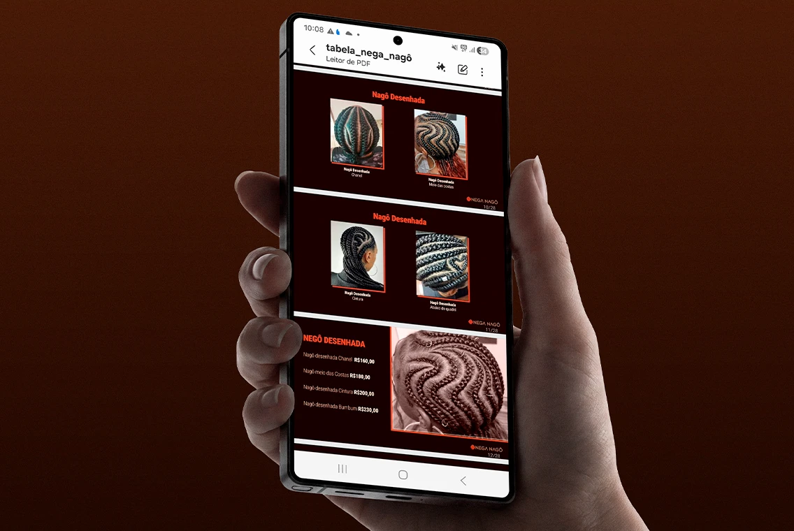
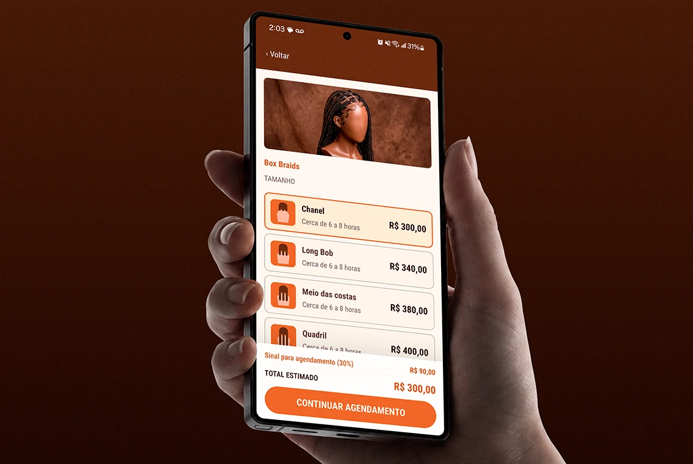
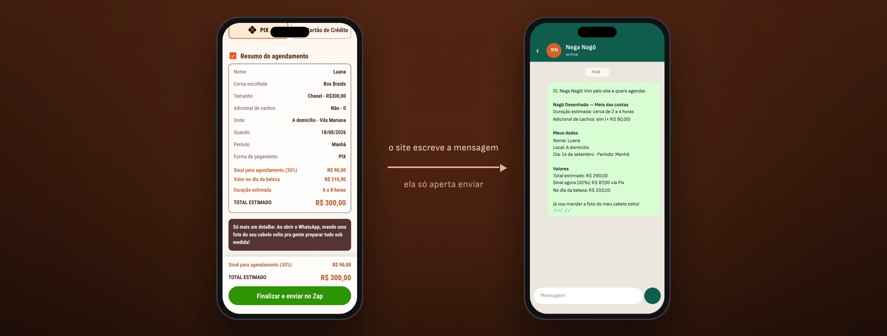
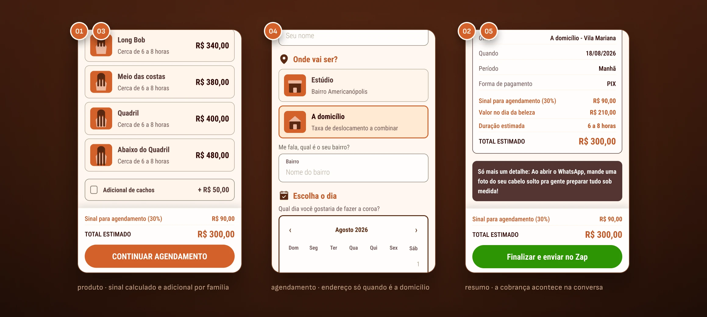
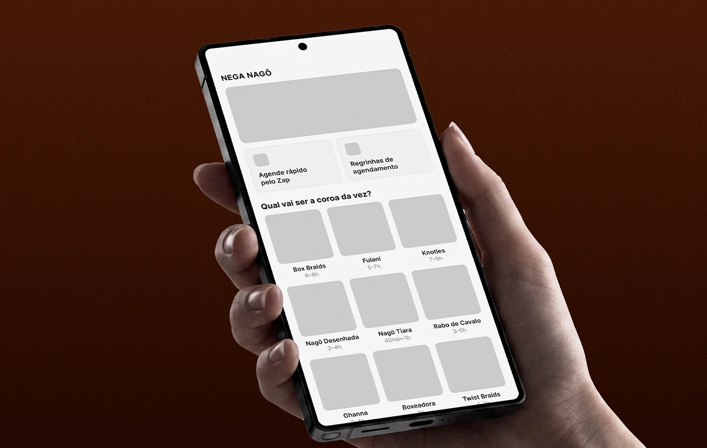
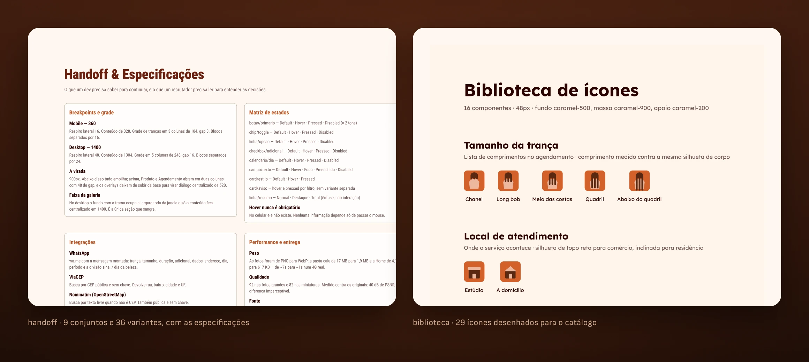
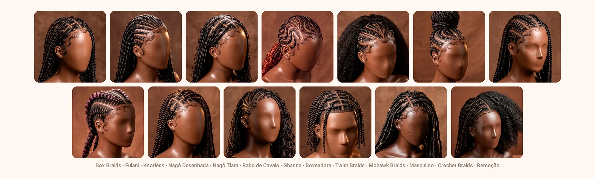

REAL PROJECT · PRODUCT, DESIGN AND CODE · LIVE
Her catalog was a screenshot. It became booking that doesn’t wait for a reply.
Nega Nagô has been braiding in São Paulo for thirteen years. Thirteen categories and more than forty price combinations lived inside an image sent by DM — and every question turned into a back-and-forth conversation. I did the research, the design, the design system and the code. Bookings went from 16 to 40 a month. After launch, availability started coming from the Google Calendar she already uses, and the site went live at neganago.com.
About the numbers.
Product delivered and in operation. The results came from Mayara’s calendar after launch — they are measurements, not projections. Section 07 shows how each one was calculated, with confidence interval and p-value.
CLIENT
Nega Nagô
braider · São Paulo
ROLE
Product design
and design engineer
DELIVERABLES
Research · UI · design system
front-end · publishing
MADE WITH
Claude ⇄ Figma via MCP
HTML, CSS and JS · Playwright
Google Calendar (freeBusy) · PHP
PERIOD
2026 · live
neganago.com
01 · THE PROBLEM
The price list fit in a photo. The decision didn’t.
The client opened the screenshot, couldn’t find the price for the size she wanted, and asked. The list wasn’t wrong — it needed another person to read it.
13
braid categories
40+
size and price combinations
16
bookings per month, on average
1
channel, answered between one client and the next
02 · BEFORE AND AFTER
Six steps with waiting became three without.
The same goal — booking a braid — down both paths. What goes away isn’t a screen: it’s the dead time between the question and the answer.

BEFORE · SIX STEPS
Asks for the price list by DM · gets a screenshot with 40+ prices · can’t find the size she wants · asks · waits for a reply between one appointment and the next · books, or gives up halfway.
Steps 3, 4 and 5 depend on Mayara’s schedule. That’s where interest cools off.

AFTER · THREE STEPS
Picks the style and size, with price and deposit on screen · fills in day, time of day and — for home visits — the address, with the postal code looked up instantly · sends the ready-written message on WhatsApp.
No step waits for a reply, and only the days that are free on her calendar show up. Mayara joins the conversation with everything already decided.

01
Why text, not a form. Mayara lives on WhatsApp and won’t open a dashboard between one appointment and the next.
02
The vocabulary is hers. The screen calls the hairstyle a crown, not a 'service' or an 'item'.
03
One less back-and-forth. The last line already offers a photo of her hair down, which the braider needs to see to estimate.
03 · CONSTRAINTS
Almost every screen decision came from a business constraint.
None of these choices came from UX intuition. They came from how she charges, where the client already is, and what the pilot could afford.

01
She buys the materials in advance. That’s why the 30% deposit appears calculated on every price screen — never at the end, as a surprise.
02
The client is already on WhatsApp. The flow ends there: the site writes the whole message, she just hits send.
03
Add-ons cost differently per braid family. One field per style; styles without the option don’t show the field.
04
She works at the studio and does home visits. The address block only exists on screen when 'home visit' is selected.
05
No payment gateway in the pilot. The site calculates and informs; payment happens in the conversation, with the exact split in the message.
The flow isn’t the ideal design.
It’s the design that fits the way she already works — and every line above is a decision I wouldn’t make looking only at the screen. The most recent constraint came after launch: availability is controlled by the Google Calendar she already used on her phone. She opens and closes days there, her way, and the site follows — no new dashboard and no new tool to learn.
04 · RESEARCH
Four people, two rounds. The first with no color at all.
I tested at two moments: first a grayscale draft, just the path; then the full prototype. In grayscale, praise has nowhere to hide.

Can you get to the end? Does the information show up when the person needs it? Without visual identity, what’s left on screen is the structure — and that’s what is being tested.
The delight came here, as expected. The difference is that it sat on top of a flow that had already worked on its own, with no color to carry it.
01
Returning client
Already books and knows the prices by heart. Shows whether the flow gets in the way of someone who already knows the path.
02
Asked, didn’t book
Asked for a price and never came back. Exactly the profile the project exists to win back.
03
Booked once
Knows the service but it didn’t become a habit. Shows what’s missing for the second time to happen on its own.
04
Never booked
Arrives with no reference at all — not for price, not for vocabulary. Reveals what the screen has to explain on its own.
THE MOST REPEATED PRAISE
It wasn’t about looks. It was about knowing how much it would cost.
The total recalculates with every tap: change the size, the add-on, the location — the total and the deposit change with it, on the same screen. The client leaves knowing how much she pays now and how much is left for the day. When she comes to book, none of it is news — and what isn’t news doesn’t become an objection. It’s the first constraint from the previous section closing the loop: the business limitation became the sales pitch.
4/4
reached the end of the booking without me explaining how it works
4/4
chose exactly what they wanted, without hesitating along the way
4/4
called it the best buying experience they had used
2
rounds: grayscale draft and full prototype
05 · SYSTEM AND ENGINEERING
A small system, fully documented — and checked by measurement.
Nine component sets, 36 variants, 29 icons and two breakpoints. A variable name in Figma is a custom property name in CSS.
9
component sets · 36 variants
29
icons drawn, for the catalog and the interface
617 KB
the entire Home, with all thirteen photos loaded
17 → 1.9 MB
the 46 images, after conversion to WebP

I compared the code against Figma by measurement, not by eye.
A Playwright suite opens the prototype at both breakpoints and reads the computed value of every gap, width and height. Four bugs that looked right on screen surfaced this way. Two of them: in the catalog grid, the longest name stretched its own column and squeezed its neighbors — on screen it passed for a difference in photos, but it was the track sized by content; and the address block received the hidden attribute correctly, but the class beat the browser default and it stayed visible — one line fixed three other places that were silently broken.
06 · IMAGE CATALOG
No photos existed. I directed and generated all thirteen.
There was no photo shoot and no stock library. I wrote a visual contract — mannequin, angle, background, light, hue — and changed one line per prompt.

Consistency can be measured.
I sampled the four corners of each photo and converted them to hue. The thirteen backgrounds fall between 12.4° and 19.2° — a 6.8° range across thirteen independent generations. It wasn’t luck: the target hue was written in the prompt. The proof by contrast is in the same data — lightness, which I didn’t specify as a number, spread from 35% to 56%. When Mayara does a real photo shoot, each photo replaces one, with the same file names. Nothing in the code changes.
07 · RESULTS
Sixteen bookings a month became forty.
Anyone can reproduce the product numbers by running the suite. The operational ones came from Mayara’s calendar, comparing before and after launch.
16
bookings per month before launch
40
bookings per month after
2.50×
rate ratio · 95% CI 1.37–4.78 · p = 0.0018
3
screens from the catalog to a ready-to-send message
The confidence interval and p-value were calculated from the bookings observed before and after launch, using an exact conditional binomial test. It’s not a model, it’s her calendar.
What I didn’t solve.
The AI images still aren’t labeled on screen: they are reference renders, not Mayara’s portfolio, and it’s written here but needs to be written in the product. Four people find the big problem, not the long tail — with the flow in operation, it’s possible to observe real use instead of scheduled sessions, and that’s the next step of the research.
08 · MORE
Other projects
ThumbDrop
An internal tool that took thumbnails out of the design team’s queue. Two versions tested with six people each, AI inside the editor, and the cost per thumbnail visible before every click.

Canaltech · Link hub
The link page stopped being rented and started measuring itself. Design system, accessibility, consent and telemetry inside a single HTML file.
Available for work
I design, I write the code, and I tell you what didn’t work.
Thirteen years in design, five of them at Canaltech across design systems, marketing and sales. If you have a surface that needs to ship finished and measured, not just specified, get in touch.
© 2026 Erick Teixeira
oerickteixeira@gmail.com · São Paulo